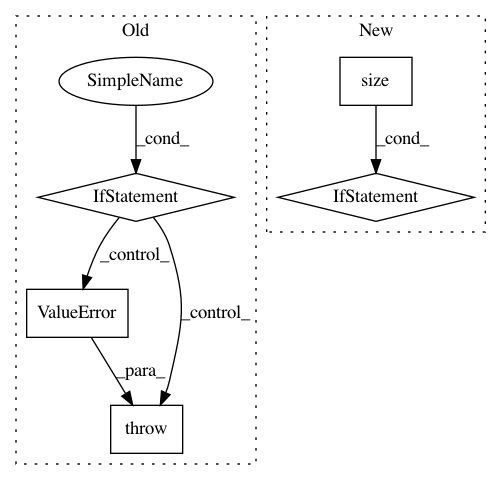

4b69ca59435931707c8c628eb4de4713c996dd91,qucumber/utils/cplx.py,,inner_prod,#Any#Any#,113
Before Change
:returns: The inner product, :math:`\\langle x\\vert y\\rangle`.
:rtype: torch.doubleTensor
if list(x.size())[0] != 2 or list(y.size())[0] != 2:
raise ValueError("An input is not of the right dimension.")
z = torch.zeros(2, dtype=torch.double)
z[0] = torch.dot(x[0], y[0]) - torch.dot(-x[1], y[1])
z[1] = torch.dot(x[0], y[1]) + torch.dot(-x[1], y[0])
After Change
z[0] = torch.dot(x[0], y[0]) - torch.dot(-x[1], y[1])
z[1] = torch.dot(x[0], y[1]) + torch.dot(-x[1], y[0])
if len(list(x.size())) == 1 and len(list(y.size())) == 1:
z[0] = x[0]*y[0] - (-x[1]*y[1])
z[1] = x[0]*y[1] + (-x[1]*y[0])
return z
def outer_prod(x, y):
A function that returns the outer product of two complex vectors, x and y.
In pattern: SUPERPATTERN
Frequency: 3
Non-data size: 5
Instances
Project Name: PIQuIL/QuCumber
Commit Name: 4b69ca59435931707c8c628eb4de4713c996dd91
Time: 2018-07-31
Author: ijsdevlu@edu.uwaterloo.ca
File Name: qucumber/utils/cplx.py
Class Name:
Method Name: inner_prod
Project Name: stellargraph/stellargraph
Commit Name: b52e083827ce7aefda75c4370db0ad6942e27dae
Time: 2018-08-12
Author: docherty@gmail.com
File Name: stellar/mapper/node_mappers.py
Class Name: HinSAGENodeMapper
Method Name: __getitem__
Project Name: Scitator/catalyst
Commit Name: 1a73a1367fedfa8368b6c42103e60e1b370bc14a
Time: 2019-04-19
Author: scitator@gmail.com
File Name: catalyst/contrib/criterion/focal_loss.py
Class Name: FocalLoss
Method Name: forward